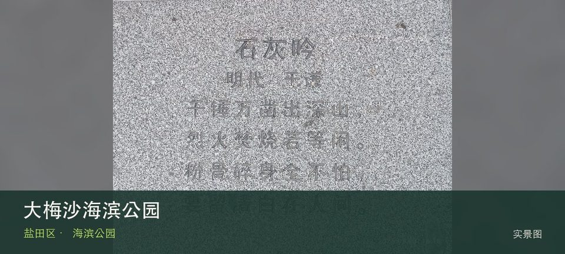
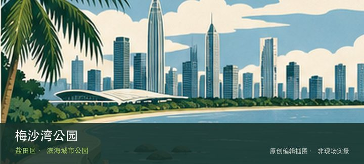

适合谁
适合海岸观察、轻量步行和愿意服从海况边界的人；不适合追逐未开放穿越线。

SHENZHEN GUIDE · 106
大梅沙 · 海滨公园
大梅沙海滨公园位于大梅沙，宽沙滩、泳区与公共配套承载深圳最集中的海滨客流，真正的决策在预约、泳区状态和高峰返程。从大梅沙沙滩转向划定泳区与救生服务时，地点的空间、历史或使用方式才会变得清楚。海岸体验取决于大梅沙沙滩与划定泳区与救生服务当天的风浪、潮位和运营边界，不宜把旧照片当成实时承诺。先确定安全退路和返程节点，遇雷雨、台风影响或封闭提示就缩短行程。
WHY GO
适合海岸观察、轻量步行和愿意服从海况边界的人；不适合追逐未开放穿越线。
出发前核对预约、开放泳区和天气，抵达后先确认救生旗与广播；不把停止入园时间当作下水时间。
公共交通先到大梅沙片区，再以大梅沙海滨公园公开参观入口为终点；多入口地点须按计划游线选择入口，并预先锁定返程站点。
旺季和节假日先查预约停车、交通管制与地铁接驳；官方停车满位就放弃开车到核心区，不排队占用盐梅路。
10 月至次年 4 月体感较舒适；夏季亲水先查海况，雷暴、台风影响或大浪提示下不靠近水线。
NEARBY IDEAS
 编辑配图·非现场实景
编辑配图·非现场实景
梅沙艺术中心位于盐田环梅路，官方名录将它列为面向公众的艺术空间。它适合与梅沙滨海路线分开安排：先确认当期展览和预约，再根据天气决定是否把海岸散步作为前后段。
 编辑配图·非现场实景
编辑配图·非现场实景
木星美术馆位于福田保税区，民营当代艺术空间位于产业园区语境，展览常围绕年轻艺术、跨媒介实践与收藏项目展开，门禁比市属馆更需确认。

编辑配图·非现场实景梅沙湾公园位于梅沙上成路8号，位于大小梅沙之间的山海节点，以滨海眺望、山体绿地和社区休憩承担海岸线路的中途停靠。